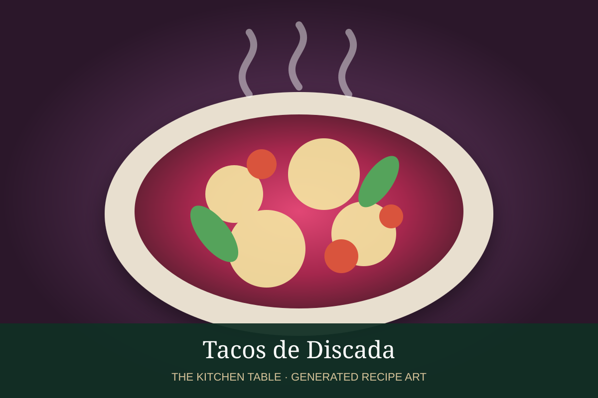

← Back to all recipes
MIXED MEAT · MEXICAN
Tacos de Discada
Northern Mexican griddle tacos with beef, pork, bacon, sausage, peppers, onion, and tomato.
1 hrMakes 16 tacos

Photo: Wikimedia Commons
Ingredients
- 1 lb beef steak, diced
- 1/2 lb pork shoulder, diced
- 6 oz bacon
- 6 oz Mexican chorizo
- 1 smoked sausage
- 1 onion
- 1 green bell pepper
- 2 tomatoes
- 1 jalapeño
- 1/2 cup beer, optional
- 16 tortillas
Preparation
- Render bacon on a large griddle.
- Brown chorizo and sausage.
- Add pork, then beef, browning in stages.
- Add vegetables and cook until softened.
- Deglaze with beer if using and serve in tortillas.